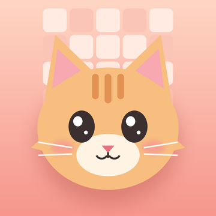

Catgrid Collection: Nonogram
English
Your game stays on your device. Catgrid has no accounts and no servers of its own. Your solved puzzles, best times, collected cards, saved games and settings are stored only on your device and are deleted when you delete the app.
Advertising
Catgrid shows ads through Google AdMob. To show and measure ads, Google may collect device information such as your advertising identifier (only if you allow tracking), IP address, device model, and ad interaction data. Where required (for example in the EEA and UK), you are asked for consent before personalised ads are shown, and you can change your choice anytime in Settings → Ad Privacy Choices. You can also allow or deny tracking in iOS Settings → Privacy & Security → Tracking. See how Google uses information from apps that use its services.
Purchases
Catgrid Premium subscriptions are processed entirely by Apple. We never see your payment details. You can manage or cancel a subscription in your Apple ID settings.
Children
Catgrid is not directed at children under 13 and does not knowingly collect personal information from them.
Changes and contact
If this policy changes, the new version will be published on this page. Questions? See the support page.
Türkçe
Oyunun cihazında kalır. Catgrid'in hesap sistemi ve kendi sunucusu yoktur. Çözdüğün bulmacalar, en iyi sürelerin, topladığın kartlar, kayıtlı oyunların ve ayarların yalnızca cihazında saklanır; uygulamayı silince bunlar da silinir.
Reklamlar
Catgrid, Google AdMob aracılığıyla reklam gösterir. Reklamları göstermek ve ölçmek için Google; reklam kimliğin (yalnızca izlemeye izin verirsen), IP adresin, cihaz modelin ve reklam etkileşim bilgileri gibi cihaz verilerini toplayabilir. Gerekli olduğu bölgelerde (ör. AB ve Birleşik Krallık) kişiselleştirilmiş reklamlardan önce onayın istenir; tercihini istediğin zaman Ayarlar → Reklam Gizlilik Tercihleri bölümünden değiştirebilirsin. İzlemeye izin verme ya da reddetme seçeneği iOS Ayarlar → Gizlilik ve Güvenlik → İzleme bölümündedir. Ayrıntılar: Google, hizmetlerini kullanan uygulamalardan gelen bilgileri nasıl kullanır.
Satın almalar
Catgrid Premium abonelikleri tamamen Apple tarafından işlenir. Ödeme bilgilerini hiçbir zaman görmeyiz. Aboneliğini Apple Kimliği ayarlarından yönetebilir ya da iptal edebilirsin.
Çocuklar
Catgrid 13 yaş altındaki çocuklara yönelik değildir ve onlardan bilerek kişisel bilgi toplamaz.
Değişiklikler ve iletişim
Bu politika değişirse yeni hali bu sayfada yayınlanır. Soruların için destek sayfasına bakabilirsin.